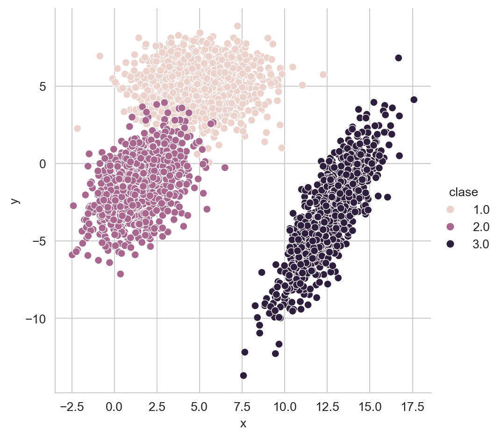
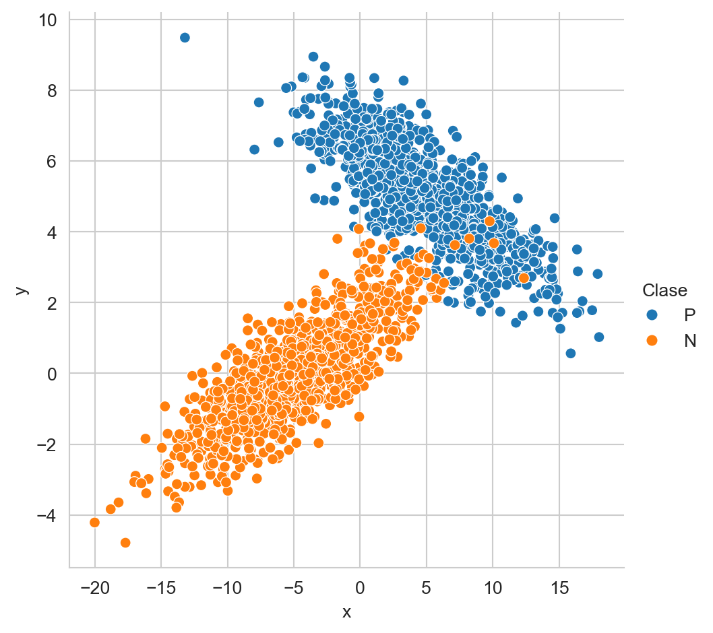
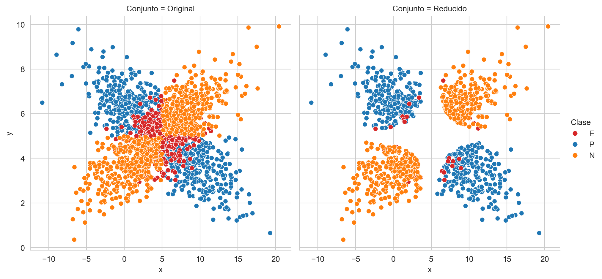

from scipy.stats import multivariate_normal
from matplotlib import pylab as plt
import numpy as np
import pandas as pd
import seaborn as sns2 Teoría de Decisión Bayesiana
El objetivo de la unidad es analizar el uso de la teoría de la probabilidad para la toma de decisiones. En particular el uso del teorema de Bayes para resolver problemas de clasificación y su uso para tomar la decisión que reduzca el riesgo.
Paquetes usados
2.1 Introducción
Al diseñar una solución a un problema particular lo mejor que uno puede esperar es tener una certeza absoluta sobre la respuesta dada. Por ejemplo, si uno diseña un algoritmo que ordene un conjunto de números uno esperan que ese algoritmo siempre regrese el orden correcto independientemente de la entrada dada, es mas un algoritmo de ordenamiento que en ocasiones se equivoca se consideraría de manera estricta erróneo.
Sin embargo, existen problemas cuyas características, como incertidumbre en la captura de los datos, variables que no se pueden medir, entre otros factores hacen que lo mejor que se puede esperar es un algoritmo exacto y preciso. Todos los problemas que trataremos en Aprendizaje Computacional caen dentro del segundo escenario. El lenguaje que nos permite describir de manera adecuada este tipo de ambiente, que se caracteriza por variables aleatorios es el de la probabilidad.
2.2 Probabilidad
En Sección 1.4 se describió que el punto de inicio de aprendizaje supervisado es el conjunto \(\mathcal D = \{ (x_1, y_1), \ldots, (x_N, y_N )\}\), donde \(x_i \in \mathbb R^d\) corresponde a la \(i\)-ésima entrada y \(y_i\) es la salida asociada a esa entrada; este conjunto tiene el objetivo de guiar un proceso de búsqueda para encontrar una método que capture de la relación entre \(x\) y \(y\).
Se pueden tratar la variables \(x\) y \(y\) de \(\mathcal D\) como dos variables aleatorías \(\mathcal X\) y \(\mathcal Y\), respectivamente; en este dominio el problema de identificar la respuesta (\(\mathcal Y\)) dada la entrada (\(\mathcal X\)) se puede describir como encontrar la probabilidad de observar \(\mathcal Y\) habiendo visto \(\mathcal X\), es decir, \(\mathbb P(\mathcal Y \mid \mathcal X)\).
2.2.1 Ejemplos
Por ejemplo, en un problema de clasificación binaria se tiene que la respuesta tiene dos posibles valores, e.g., \(\mathcal Y=\{0, 1\}\). Entonces el problema es saber si dada una entrada \(x\) el valor de la respuesta es \(1\) o \(0\). Utilizando probabilidad la pregunta quedaría como conocer la probabilidad de que \(\mathcal Y=1\) o \(\mathcal Y=0\) cuando se observa \(\mathcal X=x\), es decir, encontrar \(\mathbb P(\mathcal Y=1 \mid \mathcal X=x)\) y compararlo contra \(\mathbb P(\mathcal Y=0 \mid \mathcal X=x)\). Tomando en cuenta estos valores de probabilidad se puede concluir el valor de la salida dado que \(\mathcal X=x\). También está el caso que las probabilidades sean iguales, e.g., si \(\mathbb P(\mathcal Y=1 \mid \mathcal X=x)=\mathbb P(\mathcal Y=0 \mid \mathcal X=x)=0.5\) o que su diferencia sea muy pequeña y entonces se toma la decisión de desconocer el valor de la salida.
Para el caso de regresión (\(y \in \mathbb R\)), el problema se puede plantear asumiendo que \(\mathcal Y\) proviene de una distribución particular cuyos parámetros están dados por la entrada \(\mathcal X\). Por ejemplo, en regresión lineal se asume que \(\mathcal Y\) proviene de una distribución Gausiana con parámetros dados por \(\mathcal X\), es decir, \(\mathbb P(\mathcal Y \mid \mathcal X=x) = \mathcal N(g(x) + \epsilon, \sigma^2),\) donde los parámetros de la función \(g\) son identificados mediante \(\mathcal X\) y \(\epsilon \sim \mathcal N(0, \sigma^2)\) es el error con media cero y desviación estándar \(\sigma\). Con estas condiciones la salida \(y\) es \(\mathbb E[\mathcal Y \mid \mathcal X=x];\) asumiendo que se esa variable se distribuye como una normal entonces \(\mathbb E[\mathcal Y \mid \mathcal X=x]= \mathbb E[g(x) + \epsilon]=g(x) + \mathbb E[\epsilon]=g(x).\)
2.3 Teorema de Bayes
El problema se convierte en cómo calcular \(\mathbb P(\mathcal Y \mid \mathcal X)\), lo cual se puede realizar mediante el Teorema de Bayes el cual se deriva a continuación.
La probabilidad conjunta se puede expresar como \(\mathbb P(\mathcal X, \mathcal Y)\), esta probabilidad es conmutativa por lo que \(\mathbb P(\mathcal X, \mathcal Y)=\mathbb P(\mathcal Y, \mathcal X).\) En este momento se puede utilizar la definición de probabilidad condicional que es \(\mathbb P(\mathcal Y, \mathcal X)=\mathbb P(\mathcal Y \mid \mathcal X) \mathbb P(\mathcal X).\) Utilizando estas ecuaciones el Teorema de Bayes queda como
\[ \mathbb P(\mathcal Y \mid \mathcal X) = \frac{ \mathbb P(\mathcal X \mid \mathcal Y) \mathbb P(\mathcal Y)}{\mathbb P(\mathcal X)}, \tag{2.1}\]
donde al término \(\mathbb P(\mathcal X \mid \mathcal Y)\) se le conoce como verosimilitud, \(\mathbb P(\mathcal Y)\) es la probabilidad a priori y \(\mathbb P(\mathcal X)\) es la evidencia.
Es importante mencionar que la evidencia se puede calcular mediante la probabilidad total, es decir:
\[ \mathbb P(\mathcal X) = \sum_{y \in \mathcal Y} \mathbb P(\mathcal X \mid \mathcal Y=y) \mathbb P(\mathcal Y=y). \tag{2.2}\]
2.3.1 Problema Sintético
Con el objetivo de entender el funcionamiento del Teorema de Bayes, esta sección presenta un problema sintético. El procedimiento es el siguiente, primero se generarán los datos, los cuales van a ser tres nubes de puntos generadas mediantes tres distribuciones gausianas multivariadas. Con estas tres nubes de puntos, se utilizará el Teorema de Bayes (Ecuación 2.1) para clasificar todos los puntos generados.
El primer paso es definir las tres distribuciones gausianas multivariadas, para este objetivo se usa la clase multivariate_normal como se muestra a continuación.
p1 = multivariate_normal(mean=[5, 5],
cov=[[4, 0], [0, 2]])
p2 = multivariate_normal(mean=[1.5, -1.5],
cov=[[2, 1], [1, 3]])
p3 = multivariate_normal(mean=[12.5, -3.5],
cov=[[2, 3], [3, 7]])Los parámetros de la distribución son el vector de medías y la matriz de covarianza, para la primera distribución estos corresponden a \(\mathbf \mu = [5, 5]^\intercal\) y
\[ \Sigma = \begin{pmatrix} 4 & 0 \\ 0 & 2 \\ \end{pmatrix}. \]
Una vez definidas las distribuciones podemos generar números aleatoreos de las mismas, en el siguiente código se generar 1000 vectores aleatorios de las tres distribuciones.
X_1 = p1.rvs(size=1000)
X_2 = p2.rvs(size=1000)
X_3 = p3.rvs(size=1000)Para graficar estas tres nubes de puntos se puede hacer uso del siguiente código, donde se hace uso de la librería pandas y seaborn para la generar la gráfica.
D = np.concatenate((X_1, X_2, X_3))
clase = [1] * 1000 + [2] * 1000 + [3] * 1000
D = np.concatenate((D, np.atleast_2d(clase).T), axis=1)
df = pd.DataFrame(D, columns=['x', 'y', 'clase'])
sns.set_style('whitegrid')
_ = sns.relplot(data=df, kind='scatter', x='x',
y='y', hue='clase')

El resultado del código anterior se muestra en la Figura 2.1, donde se puede visualizar las tres nubes de puntos, donde el color indica la clase.
Actividad
Generar una nube de puntos similar a la que se muestra en la Figura 2.2. Observar que ambos ejes de la figura están en el rango \([-20, 20].\)
2.3.2 Predicción
En esta sección se describe el primer ejemplo del paso 4 de la metodología general (ver Sección 1.2) de los algoritmos de aprendizaje supervisado. El algoritmo \(f\) mencionado en la metodología corresponde en este ejemplo al uso del Teorema de Bayes y las distribuciones p1, p2 y p3 y los correspondientes priors.
Quitando la evidencia del Teorema de Bayes (Ecuación 2.1) se observa que \(\mathbb P(\mathcal Y \mid \mathcal X) \propto \mathbb P(\mathcal X \mid \mathcal Y) \mathbb P(\mathcal Y)\). En el ejemplo creado se observa que \(\mathbb P(\mathcal Y=1) = \frac{1000}{3000},\) las otras probabilidades a priori tienen el mismo valor, es decir, \(\mathbb P(\mathcal Y=2) = \mathbb P(\mathcal Y=3) = \frac{1}{3}.\)
La verosimilitud está definida en las variables p1, p2 y p3; en particular en la función pdf, es decir, \(\mathbb P(\mathcal X \mid \mathcal Y=1)\) es p1.pdf, \(\mathbb P(\mathcal X \mid \mathcal Y=2)\) corresponde a p2.pdf y equivalentemente p3.pdf es la verosimilitud cuando \(\mathcal Y=3.\)
Utilizando esta información \(\mathbb P(\mathcal X \mid \mathcal Y) \mathbb P(\mathcal Y)\) se calcula de la siguiente manera.
X = np.concatenate((X_1, X_2, X_3))
posterior = (np.vstack([p1.pdf(X),
p2.pdf(X),
p3.pdf(X)]) * 1 / 3).TLa evidencia (Ecuación 2.2) es un factor normalizador que hace que las probabilidad sume a uno, el siguiente código calcula la evidencia, \(\mathbb P(\mathcal X)\)
evidencia = posterior.sum(axis=1)Finalmente, \(\mathbb P(\mathcal Y \mid \mathcal X)\) se obtiene normalizando \(\mathbb P(\mathcal X \mid \mathcal Y) \mathbb P(\mathcal Y)\) que se puede realizar de la siguiente manera.
posterior = posterior / np.atleast_2d(evidencia).TLa clase corresponde a la probabilidad máxima, en este caso se compara la probabilidad de \(\mathbb P(\mathcal Y=1 \mid \mathcal X),\) \(\mathbb P(\mathcal Y=2 \mid \mathcal X)\) y \(\mathbb P(\mathcal Y=3 \mid \mathcal X)\); y la clase es aquella que tenga mayor probabilidad. El siguiente código muestra este procedimiento, donde el primer paso es crear un arreglo para mapear el índice a la clase. El segundo paso es seleccionar la probabilidad máxima y después transformar el índice de la probabilidad máxima a la clase.
clase = np.array([1, 2, 3])
indice = posterior.argmax(axis=1)
prediccion = clase[indice]En la variable prediccion se tienen las predicciones de las clases, ahora se analizará si estas predicciones corresponden con la clase original que fue generada. Por la forma en que se generó X se sabe que los primero 1000 elementos pertenecen a la clase \(1\), los siguientes 1000 a la clase \(2\) y los restantes a la clase \(3\). A continuación se muestra el arreglo y que tiene esta estructura.
y = np.array([1] * 1000 + [2] * 1000 + [3] * 1000)Teniendo las predicciones y los valores de reales de las clases, lo que se busca es visualizar los ejemplos que no fueron clasificados de manera correcta, el siguiente código muestra este procedimiento.
_ = [dict(x=x, y=y, error=error)
for (x, y), error in zip(X, y != prediccion)]
df_error = pd.DataFrame(_)
sns.set_style('whitegrid')
_ = sns.relplot(data=df_error, kind='scatter',
x='x', y='y', hue='error')
La Figura 2.3 muestra todos los datos generados, en color azul se muestran aquellos datos que fueron correctamente clasificados y en color naranja (error igual a True) se muestran aquellos ejemplos donde el proceso de clasificación cometió un error.
2.4 Error de Clasificación
Este ejemplo ayuda a ilustrar el caso donde, aun teniendo el modelo perfecto, este produce errores al momento de usarlo para clasificar. Se podía asumir que este error en clasificación iba a ocurrir desde el momento que las nubes de puntos de la clase 1 y 2 se traslapan como se observa en la Figura 2.1.
El ejemplo sirve también para ilustrar el 5 paso de la metodología general (ver Sección 1.2) de los algoritmos de aprendizaje supervisado que corresponde a medir el rendimiento de un modelo. Primero se empieza por medir el error promedio utilizando el siguiente código; donde el error es \(0.0110\).
error = (y != prediccion).mean()La siguiente siguiente pregunta es conocer cuánto varia este error si se vuelve a realizar el muestreo de las distribuciones p1, p2 y p3. Una manera de conocer esta variabilidad de la medición del error es calculando su error estándar.
El error estándar (ver Sección A.1) está definido como \(\sqrt{\mathbb V(\hat \theta)}\) donde \(\hat \theta\) es el valor estimado, en este caso el error. El error es una variable aleatoria que sigue una distribución de Bernoulli, dado que para cada ejemplo tiene dos valores \(1\) que indica que en ese ejemplo el clasificador se equivocó y \(0\) cuando se predice la clase correcta. El parámetro de la distribución Bernoulli, \(p\), se estima como la media entonces el error estandar de \(p\) corresponde al error estándar de la media (ver Sección A.1.1), i.e., \(\sqrt{\mathbb V(\hat p)} = \sqrt{\frac{\hat p (1 - \hat p)}{N}},\) dado que la varianza \(\sigma^2\) de una distribución Bernoulli con parámetro \(p\) es \(p (1 - p)\). Para el ejemplo analizado el error estándar se calcula con la siguiente instrucción; teniendo un valor de \(0.0019\).
se_formula = np.sqrt(error * (1 - error) / 3000)Aunque el error estándar del parámetro \(p\) de la distribución Bernoulli si se puede calcular analíticamente, se usará la técnica de Bootstrap (ver Sección A.2) para ejemplificar aquellas estadísticas donde no se puede. Esta técnica requiere generar \(B\) muestras de \(N\) elementos con remplazo de los datos. En este caso los datos son los errores entre y y prediccion. Siguiendo el método presentado en la Sección A.2 se generan los índices para generar la muestra como se observa en la primera línea del siguiente código. En la segunda línea se hacen las \(B\) repeticiones las cuales consisten en calcular \(\hat p\). Se puede observar como se usa directamente y y prediccion junto con el arreglo de índices s para calcular la media del error. Finalmente se calcula la desviación estándar de B (tercera línea) y ese valor corresponde al error estándar.
S = np.random.randint(y.shape[0], size=(500, y.shape[0]))
B = [(y[s] != prediccion[s]).mean() for s in S]
se = np.std(B)El error estándar, se, calculado es \(0.0020\).
El error estándar corresponde a la distribución que tiene la estimación del parámetro de interés, mediante Boostrap se simulo está distribución y con el siguiente código se puede observar su histograma, donde los datos estimados se encuentran en la lista B.
sns.set_style('whitegrid')
_ = sns.displot(B, kde=True)
La Figura 2.4 muestra el histograma de la estimación del error en el ejemplo analizado.
2.5 Riesgo
Como es de esperarse, existen aplicaciones donde el dar un resultado equivocado tiene un mayor impacto dependiendo de la clase. Por ejemplo, en un sistema de autentificación, equivocarse dándole acceso a una persona que no tiene permisos, es mucho mas grave que no dejar entrar a una persona con los privilegios adecuados.
Una manera de incorporar el costo de equivocarse en el proceso de selección de la clase es modelarlo como una función de riesgo, es decir, seleccionar la clase que tenga el menor riesgo. Para realizar este procedimiento es necesario definir \(\alpha_i\) como la acción que se toma al seleccionar la clase \(\mathcal Y=i\). Entonces el riesgo esperado por tomar la acción \(\alpha_i\) está definido por:
\[R(\alpha_i \mid x) = \sum_k \lambda_{ik} \mathbb P(\mathcal Y=k \mid \mathcal X=x),\]
donde \(\lambda_{ik}\) es el costo de tomar la acción \(i\) en la clase \(k\).
Suponiendo una función de costo \(0/1\), donde el escoger la clase correcta tiene un costo \(0\) y el equivocarse en cualquier caso tiene un costo \(1\) se define como:
\[ \lambda_{ik} = \begin{cases} 0 \text{ si } i = k\\ 1 \text{ de lo contrario} \end{cases}. \]
Usando la función de costo \(0/1\) el riesgo se define de la siguiente manera:
\[ \begin{split} R(\alpha_i \mid x) &= \sum_k \lambda_{ik} \mathbb P(\mathcal Y=k \mid \mathcal X=x) \\ &= \sum_{k\neq i} \mathbb P(\mathcal Y=k \mid \mathcal X=x) \\ &= 1 - \mathbb P(\mathcal Y_i \mid \mathcal X=x). \end{split} \]
Recordando que \(\sum_k \mathbb P(\mathcal Y=k \mid \mathcal X=x) = 1\). Por lo tanto en el caso de costo \(0/1\) se puede observar que mínimo riesgo corresponde a la clase más probable.
2.5.1 Acción nula
En algunas ocasiones es importante diseñar un procedimiento donde la acción a tomar sea el avisar que no se puede tomar una acción de manera automática y que se requiere una intervención manual.
La primera idea podría ser incrementar el número de clases y asociar una clase a la intervención manual, sin embargo en este procedimiento estaríamos incrementando la complejidad del problema. Un procedimiento mas adecuado sería incrementar el número de acciones, \(\alpha\) de tal manera que la acción \(\alpha_{K+1}\) corresponda a la intervención esperada, esto para cualquier problema de \(K\) clases.
La extensión del costo \(0/1\) para este caso estaría definida como:
\[ \lambda_{ik} = \begin{cases} 0 \text{ si } i = k\\ \lambda \text{ si } i = K + 1 \\ 1 \text{ de lo contrario} \end{cases}, \]
donde \(0 < \lambda < 1\).
Usando la definición de riesgo, el riesgo de tomar la acción \(\alpha_{K+1}\) es
\[ \begin{split} R(\alpha_{K+1} \mid x) &= \sum_k^K\lambda_{(K+1)k} \mathbb P(\mathcal Y=k \mid \mathcal X=x)\\ &= \sum_k^K \lambda \mathbb P(\mathcal Y=k \mid \mathcal X=x)\\ &= \lambda \sum_k^K \mathbb P(\mathcal Y=k \mid \mathcal X=x) = \lambda. \end{split} \]
2.6 Seleccionando la acción
Tomando en cuenta lo que hemos visto hasta el momento y usando como base el costo \(0/1\) que incluye la acción nula, se puede observar que el riesgo de seleccionar una clase está dado por \(R(\alpha_i \mid x) = 1 - \mathbb P(\mathcal Y=i \mid \mathcal X=x)\) y el riesgo de la acción nula es \(R(\alpha_{K+1} \mid x) = \lambda\).
En esta circunstancias se selecciona la clase \(\hat y\) si es la clase con la probabilidad máxima (i.e., \(\hat y = \textsf{arg max}_k \mathbb P(\mathcal Y=k \mid \mathcal X=x)\)) y además \(\mathbb P(\mathcal Y=\hat y \mid \mathcal X=x) > 1 - \lambda.\)
2.6.1 Ejemplo
El siguiente ejemplo ilustra el comportamiento de seleccionar la clase considerando que se tiene un riesgo en la acción nula. Lo primero es generar dos conjuntos de datos uno para la clase positiva y otro para la negativa, tal y como lo indica el siguiente código. p1 y p1 son distribuciones Gausianas, los elementos generados por p1 serán asociados a la clase positiva y los generados por p2 a la clase negativa.
p1 = multivariate_normal(mean=[5, 5],
cov=[[20, -5],
[-5, 2]])
p2 = multivariate_normal(mean=[-5, 0],
cov=[[20, 5],
[5, 2]])
X1 = p1.rvs(size=1000)
X2 = p2.rvs(size=1000)
X = np.concatenate((X1, X2))
y = np.array(['P'] * 1000 + ['N'] * 1000)La Figura 2.5 muestra el conjunto de datos donde se realizará el ejemplo de seleccionar la clase considerando el riesgo.
Código
df = pd.DataFrame(X, columns=['x', 'y'])
df['Clase'] = y
sns.set_style('whitegrid')
fig = sns.relplot(data=df, kind='scatter', x='x',
y='y', hue='Clase')
# fig.ax.set_xlim(-20, 20)
# fig.ax.set_ylim(-20, 20)

Para no introducir ningún error adicional con la estimación de parámetros, se utilizan los parámetros con los que se generaron los datos para calcular \(\mathbb P(\mathcal Y \mid \mathcal X)\) tal y como lo muestra el siguiente código.
posterior = np.c_[p1.pdf(X), p2.pdf(X)] * 1 / 2
evidencia = posterior.sum(axis=1)
posterior = posterior / np.c_[evidencia]Habiendo calculado la probabilidad de cada clase en todos los elementos de X, es momento de predecir la clase y calcular el error del proceso de clasificación.
m = {0: 'P', 1: 'N'}
hy = np.array([m[i]
for i in posterior.argmax(axis=1)])
error = (y != hy).mean()El error que se tiene corresponde a 0.0105. El siguiente paso es definir un riesgo para la clase nula, e.g. \(\lambda = 0.2\) y utilizarlo para saber cuales son los elementos que cumplen con la condición \(\mathbb P(\mathcal Y=\hat y \mid \mathcal X=x) > 1 - \lambda.\) Estos elementos se guardan en la variable valid como muestra el siguiente código.
riesgo = 0.20
valid = posterior.max(axis=1) > 1 - riesgoUtilizando valid se puede calcular el error de aquellos elementos los cuales tiene una clase positiva o negativa. El siguiente código calcula el error.
error = (y[valid] != hy[valid]).mean()El error obtenido con los elementos válidos es \(0.0041\), se puede observar que este error es menor que el error estimado con todos los elementos. El número de elementos válidos es 1966.
Para completar el ejemplo, la Figura 2.6 muestra el conjunto de datos original, con las respectivas clases y se añade una etiqueta adicional para observar aquellos elementos que fueron incorrectamente clasificados. En la figura de la derecha se presentan solamente aquellos elementos para los cuales no se seleccionó la acción nula. Se pueden observar que todavía existen errores en la predicción y que la frontera entre la clase positiva y negativa es más explícita quitando los elementos asociados a la clase nula.
Código
y_error = y.copy()
y_error[y != hy] = 'E'
df = pd.DataFrame(X, columns=['x', 'y'])
df['Clase'] = y_error
df['Conjunto'] = 'Original'
df2 = pd.DataFrame(X[valid], columns=['x', 'y'])
df2['Clase'] = y_error[valid]
df2['Conjunto'] = 'Reducido'
color=sns.color_palette()
palette = dict(P=color[0], N=color[1], E=color[3])
sns.set_style('whitegrid')
fig = sns.relplot(data=pd.concat((df, df2)), kind='scatter', x='x',
palette=palette,
y='y', hue='Clase', col='Conjunto')
Actividad
Utilizando los siguientes parámetros \(\mathbf \mu = [5, 5]^\intercal = \mu_1 = \mu_2\), \(\Sigma_1 = \begin{pmatrix} 20 & -5 \\ -5 & 2 \\ \end{pmatrix}\) y \(\Sigma_2 = \begin{pmatrix} 20 & -5 \\ -5 & 2 \\ \end{pmatrix}\), generar 1,000 muestras de las siguientes distribuciones \(\mathcal N_1(\mu, \Sigma_1)\) y \(\mathcal N_2(\mu, \Sigma_2)\). Asociar, a los datos generados por la primera distribución, la clase positiva y los elementos negativos corresponden a los 1,000 elementos generados mediante \(\mathcal N_2\).
La actividad corresponde en calcular el error y el número de elementos que no están asociados a la clase nula cuando \(\lambda = 0.2\). La Figura 2.7 muestra los datos generados y los datos válidos considerando el nivel de riesgo solicitado así como los errores en la predicción.
